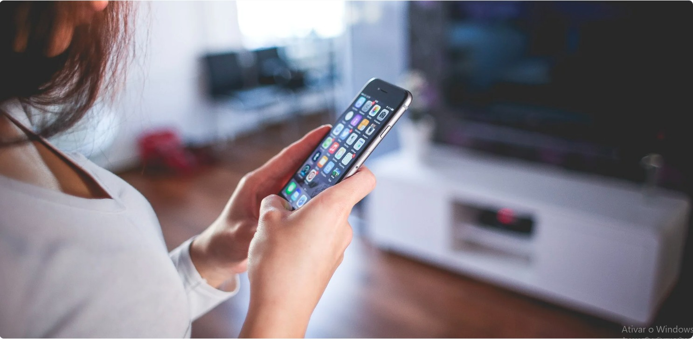

Uso excessivo de telas está associado à saúde mental de diferentes gerações
Entenda o conceito de bem-estar digital e a importância do uso saudável da tecnologia e telas de dispositivos para evitar problemas como ansiedade
O conceito de bem-estar digital tem sido pauta de discussões nos últimos anos e ganhou destaque durante a pandemia e o período de isolamento social. 2020 foi um ano atípico e, embora o tempo passado diante de telas de computador e dispositivos móveis já fosse considerável, nos últimos meses o hábito se intensificou.
Segundo uma pesquisa realizada pela Akamai, o tempo que os brasileiros passam na internet mais do que dobrou na pandemia. Em comparação com 2019, foi registrado crescimento de 112% no uso da rede no país. A Akamai é uma plataforma de armazenamento em nuvem que gerencia 30% do tráfego mundial na internet.
Essa mudança repentina se deve ao maior uso da internet para o lazer, estudos e trabalho. Já que as atividades de todos foram transpostas para o ambiente online, a relação com a tecnologia se tornou menos saudável. Isso por que as pessoas passaram a fazer seguidas mudanças de uma tela para a outra ao longo do dia: do celular para o computador, daí para a televisão e de volta para o celular.
Uma pesquisa do Instituto Delete, da UFRJ (Universidade Federal do Rio de Janeiro), mostrou que 52% dos entrevistados passaram a usar novos aplicativos durante a pandemia com o objetivo de se adequar às necessidades do “novo normal”, como reuniões online, confraternizações, shows, eventos e até mesmo visitas a pontos turísticos. Tudo isso, claro, diante de uma tela.
O uso excessivo de telas logo levou à preocupação com o bem-estar digital, pois alguns efeitos colaterais começaram a aparecer. Logo se percebeu que a mente e os olhos precisavam de um descanso. Além da exposição ocular à luz dos dispositivos, é um desafio cognitivo suportar a quantidade de tarefas online e de interações digitais.